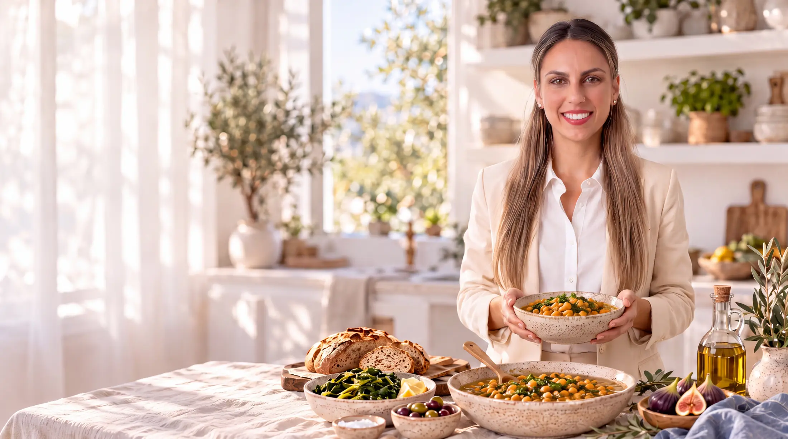
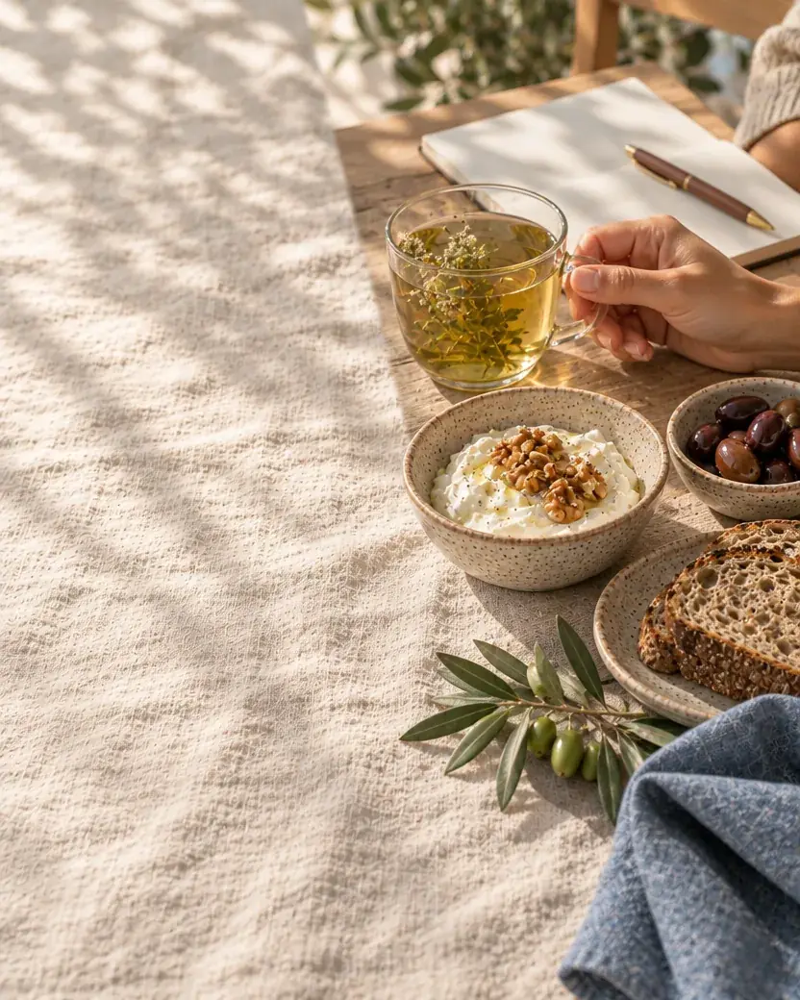
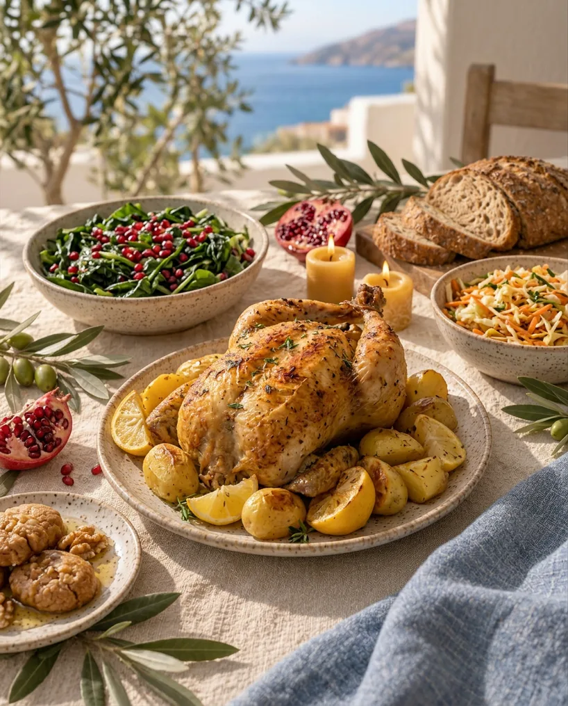

Αλεξάνδρα Μπανιά · Διαιτολόγος – Διατροφολόγος
Μπορείτε να τρώτε σωστά χωρίς να κόψετε όσα αγαπάτε
Φαγητό που ταιριάζει και στις εξετάσεις σας και στην καθημερινότητά σας.
Υποψήφια MSc Διατροφή του Ανθρώπου με εξειδίκευση στην Κλινική Διατροφή (MSc Clinical Nutrition), University of Essex


Στο ιατρείο ακούω συχνά
Ίσως το έχετε πει κι εσείς:
- «Κάνω τα πάντα σωστά και δεν χάνω γραμμάριο.»
- «Ο γιατρός μου είπε ότι είμαι οριακή, αλλά δεν μου εξήγησε τι να φάω.»
- «Στις πέντε το απόγευμα θέλω οπωσδήποτε κάτι γλυκό.»
- «Τρώω και δεν παίρνω ούτε ένα κιλό.»
Τέτοιες δυσκολίες σπάνια λύνονται με μια λίστα «τρώω, δεν τρώω». Πρώτα καταλαβαίνουμε μαζί τι συμβαίνει στο σώμα σας, με απλά λόγια και με βάση τις εξετάσεις σας. Μετά αλλάζουμε το πιάτο σας σιγά σιγά, με φαγητά που ήδη μαγειρεύετε.
Περισσότερα για μέναΘέματα υγείας
Σε τι μπορώ να σας βοηθήσω

Απώλεια βάρους
Χάνετε λίπος, προστατεύοντας τους μύες σας.

Αύξηση βάρους
Παίρνετε κιλά με θρεπτικό φαγητό και ενδυνάμωση.

Ινσουλινοαντίσταση & PCOS
Δεν κόβουμε το ψωμί· μαθαίνετε πόσο, πότε και με τι να το τρώτε.
Προδιαβήτης & διαβήτης
Υδατάνθρακες χωρίς φόβο, σε συμφωνία με την αγωγή σας.

Χοληστερίνη & τριγλυκερίδια
Το ελαιόλαδο μένει. Ψάχνουμε πού κρύβονται τα κορεσμένα.
Εμμηνόπαυση & οστά
Πρωτεΐνη σε κάθε γεύμα, ασβέστιο από το τραπέζι.
Επίσης: Θυρεοειδής · Χρόνια νεφρική νόσος · Ευερέθιστο έντερο · Αγωγή GLP-1

Πώς κλείνω ραντεβού
Πώς ξεκινάμε
- Επικοινωνία. Για ραντεβού δια ζώσης καλέστε στο ιατρείο 2843 025177. Για online στείλτε μου email στο alexbania94@gmail.com.
- Το πρώτο ραντεβού. Φέρτε μαζί σας τις τελευταίες σας εξετάσεις και πείτε μου αν παίρνετε κάποια φάρμακα ή συμπληρώματα. Θα συζητήσουμε τι τρώτε μέσα στη μέρα, τι ωράριο έχετε στη δουλειά και πώς κοιμάστε.
- Διαλέγετε τρόπο. Εξατομικευμένο διαιτολόγιο ή διατροφική συμβουλευτική. Σε κάθε συνάντηση βλέπουμε τι πήγε καλά και τι θέλει αλλαγή.
Εξατομικευμένο διαιτολόγιο
Ένα πρόγραμμα διατροφής με ελληνικά φαγητά, φτιαγμένο με βάση τις εξετάσεις σας, την αγωγή που παίρνετε, το ωράριό σας και τα φαγητά που σας αρέσουν. Όσο προχωράμε, το προσαρμόζουμε. Όταν τα ραντεβού γίνονται δια ζώσης, μετράμε και τη σύσταση σώματος.
Διατροφική συμβουλευτική
Δεν σας δίνω απλώς τι να φάτε. Βάζουμε μαζί στόχους που σας ταιριάζουν και αλλάζουμε σταδιακά τις συνήθειες που θέλετε. Κάθε συνάντηση προσαρμόζεται σε όσα σας απασχολούν, και φεύγετε με δύο σελίδες: τι συζητήσαμε και τι θα δοκιμάσετε μέχρι την επόμενη φορά.
Δείτε τι περιλαμβάνει κάθε υπηρεσία →
Για τιμές και διαθεσιμότητα, επικοινωνήστε μαζί μου.

Πώς δουλεύω
Μαζί με τον ιατρό σας
Την αγωγή σας την ορίζει ο ιατρός σας. Εγώ κοιτάζω το φαγητό, ώστε να τη βοηθάει και να μην τη δυσκολεύει. Αν το επιθυμείτε, έρχομαι σε επαφή μαζί του, για να είμαστε σε συνεννόηση.
Χωρίς ενοχές και χωρίς κήρυγμα. Αν μια εβδομάδα δεν πήγε όπως θέλατε, το συζητάμε και βρίσκουμε τι θα κάνει την επόμενη πιο εύκολη.
Άρθρα
Για να διαβάσετε με την ησυχία σας

ΓιορτέςΓιορτές χωρίς ενοχές και χωρίς δίαιτα από τον Γενάρη
Πώς να χαρείτε το γιορτινό τραπέζι χωρίς φαγοπότι και χωρίς τιμωρία μετά: τι κάνετε πριν, στο τραπέζι, με τα γλυκά, με το «φάε λίγο ακόμα» και την επόμενη μέρα.
 Νηστεία
ΝηστείαΝηστεία χωρίς στερήσεις: τι βάζω στο πιάτο
Η νηστεία φέρνει περισσότερα λαχανικά και όσπρια στο τραπέζι. Πώς καλύπτετε πρωτεΐνη, ασβέστιο και σίδηρο, με ιδέες για νηστίσιμα πιάτα και μια νηστίσιμη μέρα.
 Προδιαβήτης
ΠροδιαβήτηςΠροδιαβήτης: τι αλλάζω για να μειώσω τον κίνδυνο για διαβήτη
Τι σημαίνει ο προδιαβήτης, ποιες εξετάσεις τον δείχνουν και ποιες αλλαγές στο φαγητό και στην κίνηση μειώνουν τον κίνδυνο να γίνει διαβήτης.

Θέλετε να τα πούμε;
Χωρίς αυστηρές δίαιτες και χωρίς ενοχές, βρίσκουμε μαζί τον τρόπο να τρώτε που σας ταιριάζει. Δια ζώσης στη Σητεία ή online.
Επικοινωνία